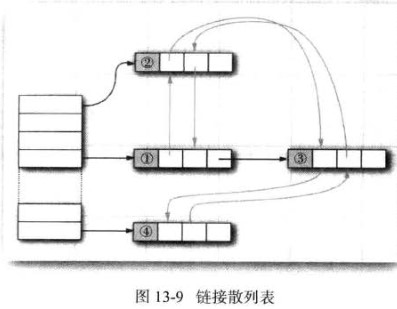

[TOC]
序列化的的基本步骤
Java提供了三种实现方案，前两种方案实际上是自定义第三部分信息(属性域的值部分)的输出方式，而第三种方法不仅可以自定义第三部分信息的输出，还可以自定义第二部分信息（类描述部分）信息的输出。
java.io.Serializable接口自定义序列化的核心是：在要序列化的类中添加如下签名方式的两个方法：
private void readObject(java.io.ObjectInputStream stream) throws IOException, ClassNotFoundException;
private void writeObject(java.io.ObjectOutputStream stream) throws IOException;
JDK中序列化的调用栈与具体代码如下：
java.io.ObjectOutputStream.writeObject ()………………………………………………………………①
└java.io.ObjectOutputStream.writeObject0()……………………………………………………………②
└java.io.ObjectOutputStream.writeOrdinaryObject()…………………………………………③
├java.io.ObjectOutputStream.writeClassDesc()………………………………………………④
└java.io.ObjectOutputStream.writeSerialData ()……………………………………………⑤
其中序列化第二部分信息（类的描述部分）由③④完成，而⑤主要完成的就是第三部分信息的序列化。
private void writeSerialData(Object obj, ObjectStreamClass desc) throws IOException{
//获取序列化对象由子类到父类的类描述集合
ObjectStreamClass.ClassDataSlot[] slots = desc.getClassDataLayout();
for (int i = 0; i < slots.length; i++) {
ObjectStreamClass slotDesc = slots[i].desc;
// 判断序列化类是否实现了writeObject方法
if (slotDesc.hasWriteObjectMethod()) {
PutFieldImpl oldPut = curPut;
curPut = null;
// -中略-
SerialCallbackContext oldContext = curContext;
try {
curContext = new SerialCallbackContext(obj, slotDesc);
bout.setBlockDataMode(true);
//如果实现了wirteObjcet方法，通过反射机制调用该方法
slotDesc.invokeWriteObject(obj, this);
bout.setBlockDataMode(false);
bout.writeByte(TC_ENDBLOCKDATA);
} finally {
//-中略-
} else {
//如果序列化类未实现writeObject方法，调用默认的属性值序列化方式
defaultWriteFields(obj, slotDesc);
}
当对象实现了java.io.Externalizable接口时，就可以灵活的控制它的序列化和反序列化过程，该接口继承自java.io.Serializable。Externalizable接口定义了两个方法writeExternal和readExternal。
Externalizable接口的writeExternal(readExternal)方法的作用仍是序列化第三部分信息(属性域的值部分)。当实现了该接口后，再在该类中添加writeObject(readObjcet)方法，那么writeObject(readObjcet)方法将会失效，具体原因通过阅读源码就了然了。
自定义一个自己的序列化类需要三个步骤，第一步需要继承ObjectOutputStream(ObjectInputStream)；第二步在构造函数调用父类的无参构造函数；第三步重写父类的writeObjectOverride(readObjcetOverride)方法，在该方法中自定义序列化方案。
反序列化类与此类似，这里不再赘述。
Java序列化提供一套验证机制。序列化类通过实现 java.io.ObjectInputValidation接口，就可以做到验证了。
public class Apple implements Serializable,ObjectInputValidation{
public void validateObject() throws InvalidObjectException {
//添加验证的对象属性的hash值，来判断序列化流是否被篡改。
boolean flag = hash();
if(flag){
//未被篡改
}else{
throw new InvalidObjectException("流信息被篡改了");
}
}
}
Java序列化验证机制的基本原理：将想要验证的序列化类注册到 java.io.ObjectInputStream类的验证回调列表中，将对象从流中反序列化出来后，会遍历回调列表，调用序列化类的validateObject方法来进行验证操作。
String str="abc efg ABC";
String regEx="a|f";//表示a或f
Pattern p=Pattern.compile(regEx);
Matcher m=p.matcher(str);
boolean rs=m.find();
boolean rs=m.find(3); //从指定的字符（第三个字符）开始查找匹配
// 如果str中有regEx，那么rs为true，否则为flase。如果想在查找时忽略大小写，则可以写成：
Pattern p=Pattern.compile(regEx,Pattern.CASE_INSENSITIVE);
// String类提供的matches()方法也支持正则表达式，返回boolean
"-1234" .matches( "-?\\d+" )
Pattern p = Pattern.compile( "^java(.+?)\n" ,Pattern.CASE_INSENSITIVE | Pattern.MULTILINE);
Matcher m = p.matcher( "java has regex\nJava has regex\n"
+ "JAVA has pretty good regular expressions\n"
+ "Regular expressions are in Java" );
while (m.find()) {
for ( int j = 0 ; j <= m.groupCount(); j++) {
//此处可以通过start和end方法取得匹配的位置
System.out.print( "[" + m.group(j) + "]" );
}
System.out.println();
}
m.group(i)是指正则表达式中的第i个括号中的内容，m.groupCount()是括号的个数;
String regEx="::";
Pattern p=Pattern.compile(regEx);
String[] r=p.split("xd::abc::cde");
// 执行后，r就是{"xd","abc","cde"}，其实分割时还有更简单的方法：
String str="xd::abc::cde";
String[] r=str.split("::");
String regEx="a+"; //表示一个或多个a
Pattern p=Pattern.compile(regEx);
Matcher m=p.matcher("aaabbced a ccdeaa");
String s=m.replaceAll("A");
// 结果为"Abbced A ccdeA" 。如果写成空串，既可达到删除的功能，比如：
String s=m.replaceAll("");
// 结果为"bbced ccde"
// String类提供replaceAll()和replaceFirst()方法也支持正则表达式：
String ss = s.replaceFirst( "a+" , "A" );
String ss = s.replaceAll( "shrubbery|tree|herring" , "banana" );
java里的clone分为： 1. 浅复制（浅克隆）: 浅复制仅仅复制所考虑的对象，而不复制它所引用的对象。 2. 深复制（深克隆）：深复制把要复制的对象所引用的对象都复制了一遍。
Java中对象的克隆,为了获取对象的一份拷贝，我们可以利用Object类的clone()方法。必须要遵循下面三点 1. 在派生类中覆盖基类的clone()方法，并声明为public【Object类中的clone()方法为protected的】。 2. 在派生类的clone()方法中，调用super.clone()。 3. 在派生类中实现Cloneable接口。
Object类里的clone方法是浅复制（浅克隆）
浅拷贝：
@Override
public Object clone() throws CloneNotSupportedException {
return super .clone();
}
深拷贝1：
@Override
public Object clone() throws CloneNotSupportedException {
Student student = ( Student ) super .clone();
//将引用的对象teacher也clone下
student.setTeacher(( Teacher )(student.getTeacher().clone()));
return student;
}
深拷贝2：
public Object deepCopy() throws Exception{
// 将该对象序列化成流,因为写在流里的是对象的一个拷贝，而原对象仍然存在于JVM里面。
// 所以利用这个特性可以实现对象的深拷贝
ByteArrayOutputStream bos = new ByteArrayOutputStream ();
ObjectOutputStream oos = new ObjectOutputStream (bos);
oos.writeObject( this );
//将流序列化成对象
ByteArrayInputStream bis = new ByteArrayInputStream (bos.toByteArray());
ObjectInputStream ois = new ObjectInputStream (bis);
return ois.readObject();
}
深拷贝、浅拷贝
Implement the Cloneable interface within the class that you want to clone; then call that object's clone method to make a copy of it. The following code demonstrates how to make the Team class cloneable:
package org.tubez.util;
public class Team implements TeamType , Cloneable, Serializable {
private String name ;
private String city ;
public String getName() {
return name ;
}
public void setName(String name ) {
this . name = name ;
}
public String getCity() {
return city ;
}
public void setCity(String city ) {
this . city = city ;
}
public String getFullName() {
return this . name + " - " + this . city ;
}
/**
* Overrides Object's clone method to create a deep copy
*
* @return
*/
public Object clone() {
Object obj = null ;
try {
ByteArrayOutputStream baos = new ByteArrayOutputStream ();
ObjectOutputStream oos = new ObjectOutputStream ( baos );
oos .writeObject( this );
oos .close();
ByteArrayInputStream bais = new ByteArrayInputStream (
baos .toByteArray());
ObjectInputStream ois = new ObjectInputStream ( bais );
obj = ois .readObject();
ois .close();
} catch ( IOException e ) {
e .printStackTrace();
} catch (ClassNotFoundException cnfe ) {
cnfe .printStackTrace();
}
return obj ;
}
/**
* Overrides Object's clone method to create a shallow copy
*
* @return
*/
public Object shallowCopyClone() {
try {
return super .clone();
} catch (CloneNotSupportedException ex ) {
return null ;
}
}
@Override
public boolean equals(Object obj ) {
if ( this == obj ) {
return true ;
}
if ( obj instanceof Team) {
Team other = (Team) obj ;
return other .getName().equals( this .getName())
&& other .getCity().equals( this .getCity());
} else {
return false ;
}
}
}
Next, to make a deep copy of a Team object, the clone() method needs to be called against that object. To make a shallow copy of the object, the shallowCopyClone() method must be called. The following code demonstrates this technique:
Team team1 = new Team();
Team team2 = new Team();
team1.setCity("Boston");
team1.setName("Bandits");
team2.setCity("Chicago");
team2.setName("Wildcats");
Team team3 = team1;
Team team4 = (Team) team2.clone();
Team team5 = team1.shallowCopyClone();
System.out.println("Team 3:");
System.out.println(team3.getCity());
System.out.println(team3.getName());
System.out.println("Team 4:");
System.out.println(team4.getCity());
System.out.println(team4.getName());
// Teams move to different cities
team1.setCity("St. Louis");
team2.setCity("Orlando");
System.out.println("Team 3:");
System.out.println(team3.getCity());
System.out.println(team3.getName());
System.out.println("Team 4:");
System.out.println(team4.getCity());
System.out.println(team4.getName());
System.out.println("Team 5:");
System.out.println(team5.getCity());
System.out.println(team5.getName());
if (team1 == team3){
System.out.println("team1 and team3 are equal");
} else {
System.out.println("team1 and team3 are NOT equal");
}
if (team1 == team5){
System.out.println("team1 and team5 are equal");
} else {
System.out.println("team1 and team5 are NOT equal");
}
Although this code does not do very much, it demonstrates how to make a clone of an object. The resulting output would be as follows.
Team 3: Boston Bandits Team 4: Chicago Wildcats Team 3: St. Louis Bandits Team 4: Chicago Wildcats Team 5: Boston Bandits team1 and team3 are equal team1 and team5 are NOT equal
https://www.jianshu.com/p/613a6118e2e0
Java 8 Streams map() examples
Java中Map常见有 HashMap、TreeMap、ConcurrentHashMap、LinkedHashMap、WeakHashMap、IdentityHashMap等。
hash code 是对象导出的一个整数值。 Object类的hashCode为每一个对象返回一个默认的散列码，其值为对象的存储地址。而字符串的hash code算法是 hash = 31 * hash + charAt(i); 如果a.equals(b)为true，那么a和b必须具有相同的hash code；
这就决定了存入HashMap、HashSet的对象必须覆盖实现equals和hashCode方法，当发生散列冲突时，要调用equals方法查看对象是否已经存在。
TreeSet是一个有序集合，可以自动地对元素进行排序，排序是用树结构完成（用red-black tree实现），元素被添加到树中，被放置在正确的排序位置上，而迭代器总是以排好序的顺序访问每一个元素。 将元素添加到树中要比添加到散列表中慢，但是，比将元素添加到数组或链表的正确位置上还是要快很多。（add：hash>tree>arr/linked) 放入TreeSet中的元素必须实现Comparable或构造treeSet时指定Comparator。
class Item implements Comparable<Item>{
public int compareTo(Item other){...... }
}
public TreeSet(Comparator<? super E> comparator)
队列是在尾部添加一个元素，在头部删除一个元素。双端队列是可以在头部he [he]尾部同时添加或删除元素。Deque有两个实现ArrayDeque和LinkedDeque。
优先级队列（PriorityQueue）按照任意的顺序插入，却总是按照排序的顺序进行检索。也就是说，调用remove方法时，总是获取队列最小的元素，但此时并没有对所有的元素进行排序，其排序是迭代完成的。优先级队列使用了堆（heap）这种数据结构。heap是一个可以自我调整的二叉树，对树执行add和remove操作时，可以让最小的元素移动到根，而不必花时间对元素进行排序。 使用优先级队列的典型示例是任务调度。总是先执行优先级最高的任务（1设为最高）。
HashMap对键进行散列，TreeMap的键必须实现Comparable接口。散列或比较函数只能作用于键。
WeakHashMap的特点是，当除了自身有对key的引用外，此key没有其他对象引用，那么此map会自动丢弃此键值对。
String a = new String("a");
String b = new String("b");
Map<String,String> map = new HashMap<>();
map.put(a, "aaa");
map.put(b, "bbb");
Map<String,String> weakmap = new WeakHashMap<>();
weakmap.put(a, "aaa");
weakmap.put(b, "bbb");
map.remove(a);
a=null; // a指向null后，除了WeakHashMap中还保存a引用外已经没有指向a的引用了，所以WeakHashMap会自动回收a的键值对
b=null; // 虽然b对象指向了null，但HashMap中还有指向b的指针，所以b将保留在内存中
System.gc();
for (Map.Entry<String,String> en : map.entrySet()) {
System.out.println("map:"+en.getKey()+":"+en.getValue());
}// out: map:b:bbb
for (Map.Entry<String,String> en : weakmap.entrySet()) {
System.out.println("weakmap:"+en.getKey()+":"+en.getValue());
}// out: weakmap:b:bbb

LinkedHash 可以避免元素随机排列，当元素插入hash桶（bucket）中时，就会并入双向链表中。LinkedHashMap的iterator顺序是访问顺序，而不是插入顺序。每次调用get/put方法时，受到影响的元素被移动到链表的尾部（散列桶中不受影响）。
LinkedHashMap可用来构造高速缓存。 LinkedHashMap最常用元素放在链表尾部，头部是最不常用的元素。遵循缓存“最近最少使用”原则，删除链表头部元素，最近访问元素放在表尾。 覆盖 LinkedHashMap#removeEldestEntry方法可以判断是否删除最旧的元素。
/**
* 返回true时，删除eldest元素，添加一个新元素；
* 返回false时，仅调整元素在链表的位置。
* 不翻盖时，默认返回false，链表长度不可控。
*/
protected boolean removeEldestEntry(Map.Entry<K,V> eldest){
return size()>100; // 超过100个元素时，删除最旧的元素
}
IdentityHashMap键的散列值不是使用hashCode计算的，而是使用i dentityHashCode计算的（使用键对象的内存地址计算散列码）。 IdentityHashMap元素比较是使用==，而不是equals，即直接比较内存地址。也就是说，不同键对象，即使内容相同，也被视为不同的对象。常用于对象遍历算法（如：对象序列化？不是很明白？）
Card cardDeck = new Card[23];
......
//返回一个对象视图（对象引用映射，故不能修改此List），而非ArrayList
List<Card> cardList = Arrays.asList(cardDeck);
List<String> names = Arrays.asList("aa", "bb", "cc");
// public static <T> List<T> nCopies(int n, T o)
// 创建一个100个字符串的List，每一个串为DEFUALT，次串只被存储一次
// 返回的List对象不可修改，即add方法不能用
List<String> strs = Collections.nCopies(100, "DEFAULT");
// 返回一个视图对象，它是一个不可修改的单元素集合
public static <T> Set<T> singleton(T o); // 只有一个元素
public static <T> List<T> singletonList(T o);
public static <K,V> Map<K,V> singletonMap(K key, V value);
// 不可修改视图，用于查看，防止非法修改
public static <T> Collection<T> unmodifiableCollection(Collection<? extends T> c);
public static <T> List<T> unmodifiableList(List<? extends T> list);
public static <T> Set<T> unmodifiableSet(Set<? extends T> s);
public static <T> SortedSet<T> unmodifiableSortedSet(SortedSet<T> s);
public static <K,V> Map<K,V> unmodifiableMap(Map<? extends K, ? extends V> m);
// 同步视图
public static <K,V> Map<K,V> synchronizedMap(Map<K,V> m);
// 检查视图，用来检查泛型类型不匹配
public static <E> List<E> checkedList(List<E> list, Class<E> type);
List<String> safeStrings = Collections.checkedList(list, String.class);
想遍历又想删除，你应该倒着来
ArrayList<String> list = new ArrayList<String>();
list.add("one");
int n = list.size();
for (int i = n - 1; i >= 0; i--)
{
if (list.get(i).equals("one"))
{
list.remove(i);
}
}
System.out.println(list);
Iterator<String> itr= list.iterator();
while(itr.hasNext()){
String e = sListIterator.next();
if(e.equals("3")){
it r.remove();
}
}
InputStream inputStream = new FileInputStream("d:/sample.txt");
Scanner scanner = new Scanner(inputStream, "UTF-8");
String text = scanner.useDelimiter("\\A").next();
System.out.println(text);
scanner.close();
InputStream inputStream = new FileInputStream("d:/sample.txt");
StringBuilder stringBuilder = new StringBuilder();
BufferedReader bufferedReader = new BufferedReader(new InputStreamReader(inputStream));
boolean firstLine = true;
String line = null; ;
while((line = bufferedReader.readLine()) != null){
if(!firstLine){
stringBuilder.append(System.getProperty("line.separator"));
}else{
firstLine = false;
}
stringBuilder.append(line);
}
System.out.println(stringBuilder.toString());
InputStream inputStream = new FileInputStream("d:/sample.txt");
byte[] buffer = new byte[2048];
int readBytes = 0;
StringBuilder stringBuilder = new StringBuilder();
while((readBytes = inputStream.read(buffer)) > 0){
stringBuilder.append(new String(buffer, 0, readBytes));
}
System.out.println(stringBuilder.toString());
import org.apache.commons.io.IOUtils;
InputStream inputStream = new FileInputStream("d:/sample.txt");
String text = IOUtils.toString(inputStream);
System.out.println(text);
import com.google.common.io.CharStreams;
InputStream inputStream = new FileInputStream("d:/sample.txt");
String text = CharStreams.toString(new InputStreamReader(inputStream, "UTF-8"));
System.out.println(text);
byte[] bytes = Files.readAllBytes(Paths.get("d:/sample.txt"));
String text = new String(bytes);
System.out.println(text);
java读取文件的两种方法：java.io和java.lang.ClassLoader
（1）java.io: 相对于当前用户目录的相对路径读取；注重与磁盘文件打交道或者纯java project中使用。（虽然ClassLoader方式更通用，但是如果不是javaEE环境，要定位到classpath路径下去读文件是不合理的。） 它适用于非Java Web Project。
File file = new File("...");
FileInputStream fis = new FileInputStream("...");
FileReader fr = new FileReader("...");
（2）java.lang.ClassLoader: 相对于classpath的相对路径读取；建议在javaEE环境中都使用这种方式。
ClassLoader loader = XXXClass.class.getClassLoader();
// or
ClassLoader loader = Thread.currentThread().getContextClassLoader();
URL url = loader.getResource("...");
File file = new File(url.getFile());
InputStream input = loader.getResourceAsStream("...");
它适用于Web Project 或 jar文件。
总结：
By using a WatchService, you can subscribe to be notified on events happening on that folder. In this example, we subscribe for ENTRY_CREATE, ENTRY_MODIFY, and ENTRY_DELETE events:
System.out.println("Watch Event, press q<Enter> to exit");
FileSystem fileSystem = FileSystems.getDefault();
WatchService service = fileSystem.newWatchService();
Path path = fileSystem.getPath(".");
System.out.println("Watching :" + path.toAbsolutePath());
path.register(service, StandardWatchEventKinds.ENTRY_CREATE, StandardWatchEventKinds.ENTRY_DELETE, StandardWatchEventKinds.ENTRY_MODIFY);
boolean shouldContinue = true;
while (shouldContinue) {
WatchKey key = service.poll(250, TimeUnit.MILLISECONDS);
// Code to stop the program
while (System.in.available() > 0) {
int readChar = System.in.read();
if ((readChar == 'q') || (readChar == 'Q')) {
shouldContinue = false;
break;
}
}
if (key == null)
continue;
for (WatchEvent<?> event : key.pollEvents()) {
if (event.kind() == StandardWatchEventKinds.OVERFLOW)
continue;
WatchEvent<Path> ev = (WatchEvent<Path>) event;
Path filename = ev.context();
System.out.println("Event detected :" + filename.toString() + " " + ev.kind());
}
boolean valid = key.reset();
if (!valid) {
break;
}
}
参考： Java: Listing the contents of a resource directory Using URLConnection to list files and directories on FTP server
/**
* List directory contents for a resource folder. Not recursive.
* This is basically a brute-force implementation.
* Works for regular files and also JARs.
*
* @param clazz Any java class that lives in the same place as the resources you want.
* @param path Should end with "/", but not start with one.
* @return Just the name of each member item, not the full paths.
*/
String [] getResourceListing ( Class clazz, String path ) throws URISyntaxException, IOException {
URL dirURL = clazz.getClassLoader().getResource ( path ) ;
if ( dirURL != null && dirURL.getProtocol () .equals ( "file" )) {
/* A file path: easy enough */
return new File ( dirURL.toURI ()) .list () ;
}
if ( dirURL == null ) {
/*
* In case of a jar file, we can't actually find a directory.
* Have to assume the same jar as clazz.
*/
String me = clazz.getName () .replace ( "." , "/" ) + ".class" ;
dirURL = clazz.getClassLoader().getResource ( me ) ;
}
if ( dirURL.getProtocol () .equals ( "jar" )) {
/* A JAR path */
String jarPath = dirURL.getPath () .substring ( 5 , dirURL.getPath () .indexOf ( "!" )) ; //strip out only the JAR file
JarFile jar = new JarFile ( URLDecoder.decode(jarPath, "UTF-8" ) ) ;
Enumeration<JarEntry> entries = jar.entries () ; //gives ALL entries in jar
Set<String> result = new HashSet<String> () ; //avoid duplicates in case it is a subdirectory
while ( entries.hasMoreElements ()) {
String name = entries.nextElement () .getName () ;
if ( name.startsWith ( path )) { //filter according to the path
String entry = name.substring ( path.length ()) ;
int checkSubdir = entry.indexOf ( "/" ) ;
if ( checkSubdir >= 0 ) {
// if it is a subdirectory, we just return the directory name
entry = entry.substring ( 0 , checkSubdir ) ;
}
result.add ( entry ) ;
}
}
return result.toArray ( new String [ result.size ()]) ;
}
throw new UnsupportedOperationException ( "Cannot list files for URL " +dirURL ) ;
}